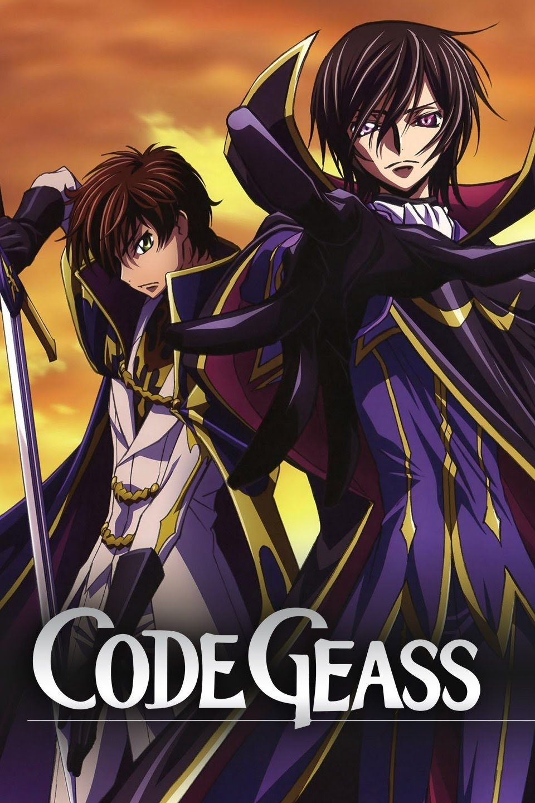

私の独断と偏見で選んだアニメTOP5①
18/4/2021
今日から私のおススメアニメ５選を発表していきたいと思います。 初日に紹介するのは、私の人生を狂わせた作品、コードギアスです。物語を要約すると、神聖ブリタニア帝国の元皇子でありながら、帝国に反逆を誓い、テロリストとして世界を壊そうとする主人公ルルーシュ、 帝国に支配されたエリア11の元首相の息子でありながら、ブリタニア軍の騎士として世界を内側から変えようとするスザク。この二人の物語が交差して、大きな世界のうねりとなっていく。 このアニメが放送されていたのはちょうど私が大学２年生だった頃、自分の人生に疑問を感じながら生きていた私に、強烈な目的意識をもったルルーシュは衝撃的でした。 作画も美しく、今でも私のNO１アニメです！
私の独断と偏見で選んだアニメTOP5②
19/4/2021
Re Zero;はまだ１０話程しか見ていないのですが、いつも続きがワクワクします。 時間が出来次第早く見たいです。

私の独断と偏見で選んだアニメTOP5③
20/4/2021
Jyujyutu Kaisen 呪術廻戦はいまとても流行っていますね、流行に乗ろうとミーハーな気持ちで見始めたのですが、 案の定ハマってしまいました。五条先生がとにかくカッコいいです😍

私の独断と偏見で選んだアニメTOP5④
21/4/2021
Beasters 心理描写が素晴らしく描かれていて、ストーリも面白いです。

私の独断と偏見で選んだアニメTOP5⑤
22/4/2021
Violet Evergarden お話を要約すると、戦争孤児で戦うことしか知らなかったヴァイオレットが、 ”自動手記人形”という他人の手紙の代筆をする仕事につき、人々の心を理解していくというお話です。 心理描写が細かく描かれていて毎回涙なしには見られませんでした。しかし見終わった後はいつも爽やかな気持ちでした。 作画も大変美しいです。